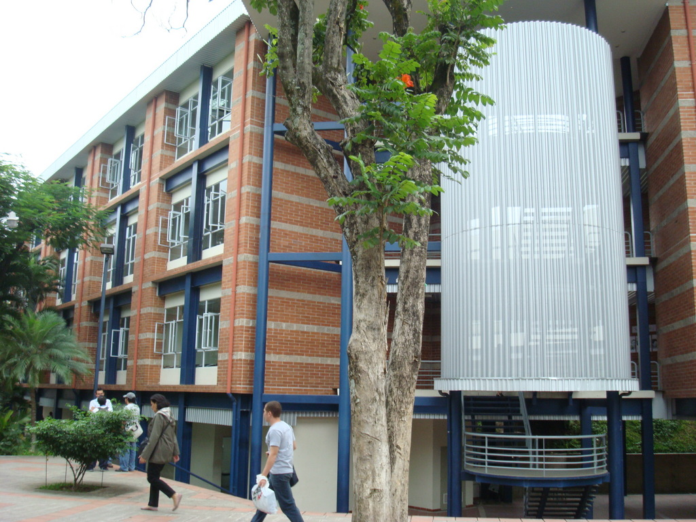
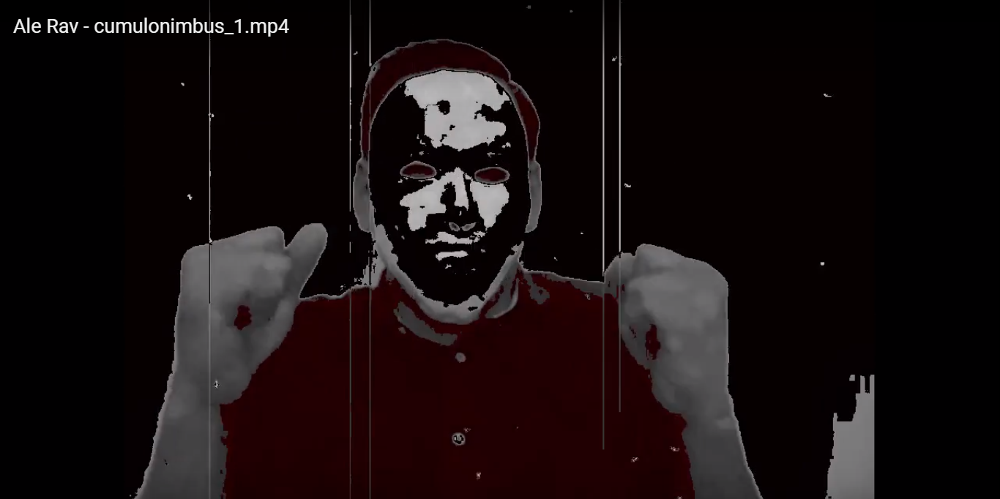
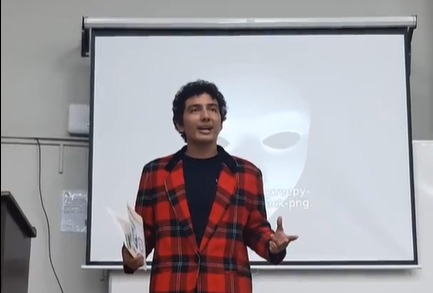

Día 1
El día lunes a final de clase nos pasaron un video urgente en el cual se mostraba a un hacker con una mascara que se hacia llamar Ale Rav, en el video el hacker hablaba sobre los métodos de enseñanza de la universidad, que eran muy malos y como planeaba demoler la universidad el día viernes, menciono un artículo que decía que en caso de la destrucción de un centro estudiantil, los estudiantes recibirían de manera automática su título, todos nos quedamos sorprendidos por la situación, a todos nos intereso tener ya nuestro titulo pero luego de reflexionar todos concluimos que no debíamos permitir que la UCA fuera destruida y debíamos encontrar la manera de detener a Ale Rav.
Después ver el video el profesor nos puso el audio de “Kurt” el cual pareciera que conocía los planes de Ale Rav y nos pedía ayuda para detenerlo, menciono algo sobre mensajes encriptados y un código QR, luego de escanear el código nos enviaba a una pagina con los pasos para desencriptar un mensaje, para desencriptar el mensaje debíamos programa una función que validara el DUI de una base de datos que nos había proporcionado Kurt, luego de realizar la función se nos abría la misión para el día siguiente.
Día 2
El día martes tuvimos que ir al polideportivo para encontrar el siguiente código QR y analizarlo, ese código QR tenía información dejada por Ada Jarvis, al principio nos decía que no le importaba lo que le pasara a la UCA, pero luego nos cuenta lo que descubrió de Ale Rav, que estaba experimentando con el código de detonación para la destrucción de la UCA.
Nos pide que resolvamos unos triggers y que tuvo que destruir su computadora para que Ale no la rastreara, luego de resolver el ejercicio descubrimos un mensaje de Kurt, en el nos dice lo contento que esta de que descubriéramos el mensaje de Ada y nos dice que para la siguiente pista nos veamos debajo de las aulas D el día miércoles entre 2pm y 3:30pm que le digamos Renacho que si conoce Kurt, esa es la clave para que nos muestre el código.
Dia 3

En las aulas D estaba el otro código que teniamos que escanear, el código contenía un audio en el cual nos comentaba que Ale Rav había sido su catedrático de bases, como era su relación y lo que encontró sospechoso una vez.
En el audio Kurt comenta que esta decidido a detener a Ale Rav a pesar de su relación, nos pide resolver otro ejercicio y nos pedía realizar una función y triggers, depues de realizar nos dio gracias por nuestra cooperación, nos contó que Ada logro comprender el programa de detonación de las bombas que encontró en el laboratorio y compartió el código, después de ejecutar el código sabemos que Ada esta a salvo.
Dia 4

El jueves nos mostraron otro video de Ale Rav diciendo que alguien de sus conocidos lo traicionó y que será lo destruirá, y que ninguno de esos inconvenientes altera sus planes, también tenemos el tercer audio de Kurt en el cual dice que Ale Rav ya sabe quien es él y corre peligro por eso se esta escondiendo, nos pide salir a la terraza donde recibimos el nuevo código QR a traves de un dron, al analizarlo tenemos un nuevo desafío que debemos resolver para seguir con la misión.
Dia 5

Al ultimo día Kurt nos deja un video donde expone a Ale Rav, la identidad de Ale Rav era el catedrático Erick Varela, la muerte de Kurt fue repentina, estábamos en la magna V alrededor de las 5pm cuando dio un discurso de agradecimiento por haberlo ayudado y de pronto empezó a toser cayendo a los pocos segundos muerto, fue cuando cuando supimos la identidad de Ale Rav.